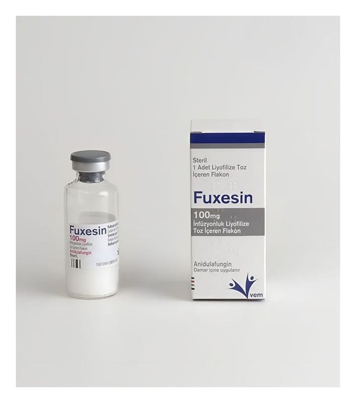

Fuxesin 100 mg İnfüzyonluk Liyofilize Toz İçeren Flakon, Flakon, 1 Adet

Ne için kullanılır
KT · Bölüm 1FUXESİN, 1 flakon içerisinde, 100 mg anidulafungin içeren beyaz, kirli beyaz liyofilize tozdur. Sulandırılarak hazırlanan çözelti berrak olmalı, görülebilir parçacık içermemelidir. Etkin madde anidulafungindir. Anidulafungin ekinokandin adı verilen bir ilaç grubundandır. Bu ilaçlar ciddi mantar enfeksiyonlarının tedavisinde kullanılmaktadır. Anidulafungin fungal hücre duvarının bir bileşeninin (1,3-β-D-glukan) üretimini engeller. Anidulafungine maruz kalan mantar hücreleri, tamamlanmamış veya kusurlu hücre duvarlarına
sahip olur ve üreyemez hale gelirler. Anidulafungin invazif kandidiyazis (kandidemi dahil) olarak adlandırılan bir mantar enfeksiyonu türünü tedavi etmek için yetişkin ve 1 ay-18 yaş arasındaki çocuk hastalara verilmektedir. Bu enfeksiyon kana ve vücudun iç organlarına yerleşir. Enfeksiyona Candida adı verilen mantar hücreleri (maya) neden olur.